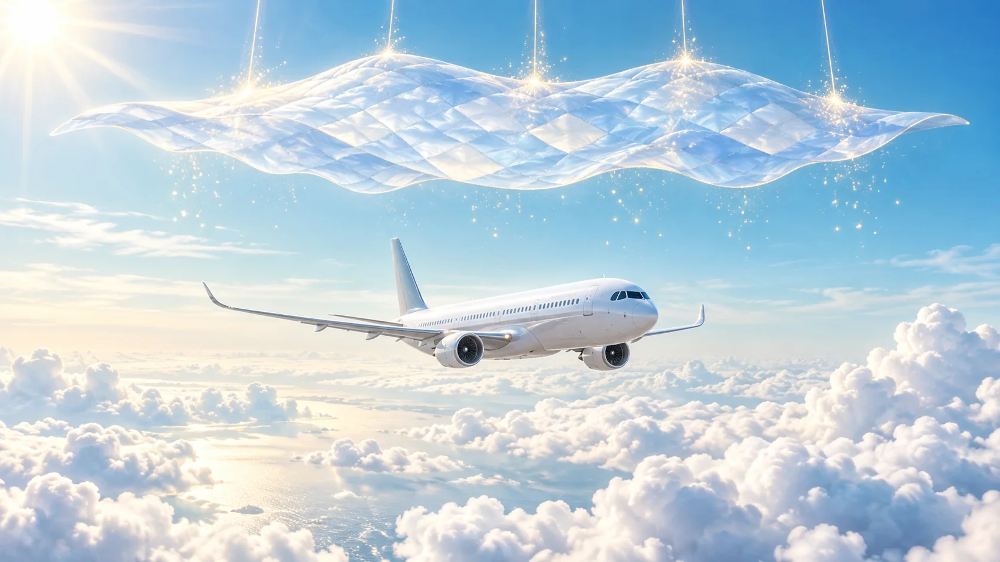
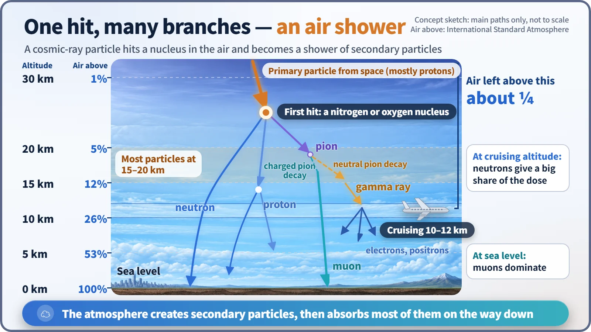
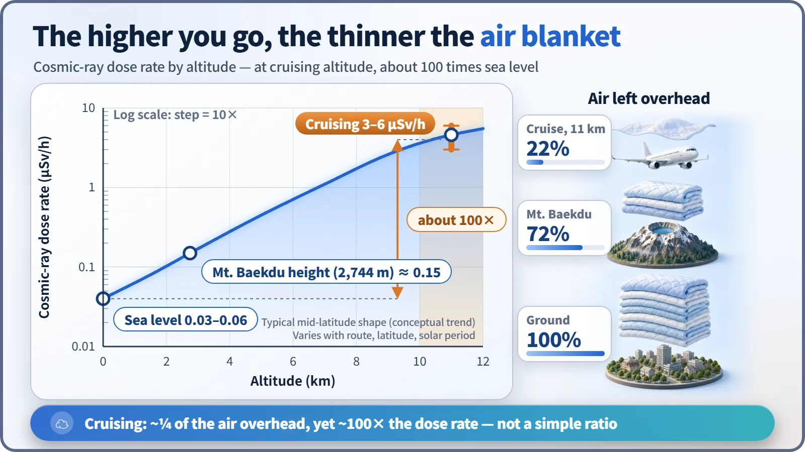

Nuclear & Radiation Basics · 019
When the Sky's Blanket Wears Thin — Cosmic Rays and Radiation on Flights
The atmosphere is a thick blanket against cosmic rays; at cruising altitude only about a quarter of it is left overhead.

Cosmic rays are high-energy particles from space; the atmosphere turns them into showers of secondary particles and absorbs most of them. At cruising altitude only about a quarter of the air is left overhead, and the dose rate is about 100 times that at sea level. One long-haul round trip adds about 0.15 mSv, roughly two to three weeks of natural background. [1]
Bullets from space: what are they?
Despite the name, cosmic rays are mostly not rays of light. They are streams of extremely energetic particles, mostly atomic nuclei; the word "ray" is a historical name that stuck. About 88% are protons, about 11% alpha particles (helium nuclei), and the rest heavier nuclei. Most come from the galaxy beyond our solar system, probably accelerated in places like supernova remnants; the Sun adds particles during eruptions, but the everyday background is galactic. Some carry energies beyond anything the largest human-built accelerator can reach. [2]
A thick blanket overhead: the atmosphere
The column of air above your head weighs more than about 1 kilogram on every square centimeter, like living under about 10 meters of water. Think of it as a thick winter blanket. At sea level we sleep under many layers, but the higher you go, the more layers come off: about half remains at 5 kilometers, and only about a quarter at 10 kilometers, where airliners cruise.

One hit, hundreds of branches: the air shower
The blanket doesn't simply stop cosmic rays. A primary particle hits a nitrogen or oxygen nucleus near the top of the atmosphere, the nucleus shatters, and neutrons, protons and pions fly out, like the opening break in pool. These hit other nuclei, decay and collide again, multiplying like a waterfall: an air shower.
So the cosmic rays we receive are mostly secondary particles. At sea level, penetrating muons dominate; at aircraft altitudes, neutrons give a large share of the dose (roughly 40% or more). The number of particles peaks at around 15 to 20 kilometers and falls above that; airliners fly below, where the rate still climbs with height. [2]
How different are the numbers?
At sea level, the cosmic-ray dose rate is about 0.03 to 0.06 μSv (microsieverts) per hour. It roughly doubles with every 1.5 to 2 kilometers you climb, so at the summit of Mount Baekdu (2,744 m) it's three to four times the ground level.

At cruising altitude it reaches roughly 3 to 6 μSv per hour at mid-latitudes, about 100 times ground level. A quarter of the blanket, yet 100 times the dose rate: cruising altitude sits close to where the shower is multiplying fastest, before the thick air below filters it.
Latitude: Earth's magnetic field bends charged cosmic rays aside, strongly at the equator and weakly near the poles, so at the same altitude polar routes run two to three times higher than equatorial ones. The Sun: when solar activity is high, the solar wind pushes galactic cosmic rays away, and the dose drops by about 25%. [1] [3]
A round trip to New York?
One estimate puts a one-way flight from Seoul (Incheon) to New York at about 0.07 to 0.085 mSv, so about 0.15 mSv round trip, depending on route, flight time and the solar cycle. With people worldwide receiving about 3 mSv a year of natural radiation, one round trip equals roughly two to three weeks of natural background; cosmic rays account for about 0.3 mSv of that annual total. A thin aluminum fuselage barely stops high-energy particles and neutrons, so inside and outside the cabin differ little. [4]
People whose workplace is the sky
Aircrew who fly hundreds of hours a year are a different story. The International Commission on Radiological Protection recommends managing aircrew cosmic-ray exposure as occupational exposure. In South Korea, for example, airlines calculate and manage crew doses under a law revised in 2023, with route or schedule changes reported to be required when a crew member risks exceeding 6 mSv a year. Doses are calculated with software from flight time, altitude and route rather than measured on every flight. [5]
The lesson of one blanket
The atmosphere turns cosmic rays into secondary showers and filters out most of them. Higher altitudes and latitudes mean a thinner blanket and a looser shield. For passengers, the amount compares with natural radiation; for frequent-flying crew, it is tracked separately. The key to radiation is not "is it there" but "how much."